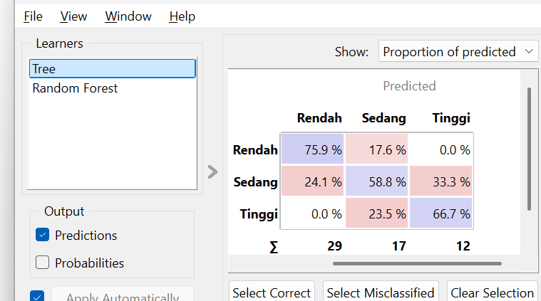
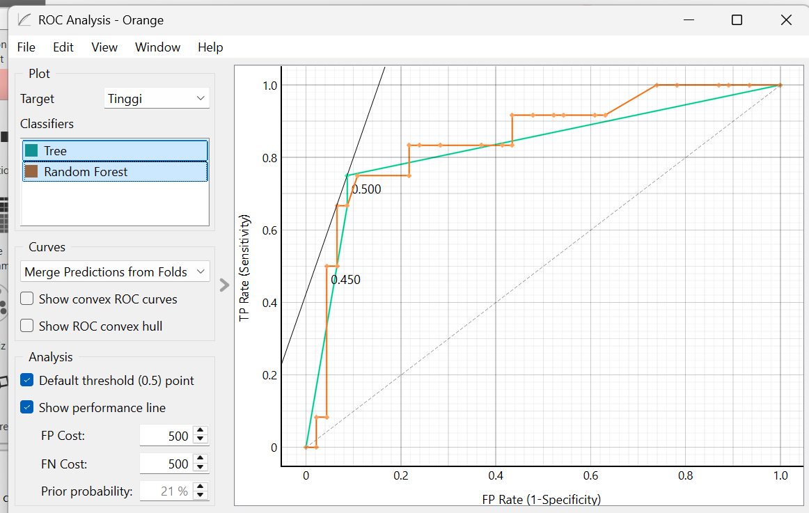

Bagian 2: Analisis Menggunakan Orange Data Mining#
Dokumen ini berisi penjelasan dan hasil analisis data “Higher Education Students Performance Evaluation” menggunakan aplikasi visual Orange Data Mining.
1. Alur Kerja (Workflow) Orange#
Berikut adalah visualisasi alur kerja (workflow) yang dibangun di Orange:

Penjelasan Alur:
File: Memuat dataset original.
Formula & Select Columns: Digunakan untuk melakukan pra-pemrosesan data secara visual dan menentukan mana kolom yang menjadi Target (kolom
GRADE) dan mana yang menjadi kumpulan atribut / Features.
Tree & Random Forest: Merupakan algoritma pembelajaran mesin (Learners) yang digunakan untuk membangun model pemodelan guna memprediksi nilai (Grade) siswa.
Test and Score: Merupakan pusat evaluasi (arena pengujian) di mana kinerja kedua model diuji dan diukur secara berdampingan pada dataset yang sama.
Widget Evaluasi (Confusion Matrix, ROC Analysis, Tree Viewer): Berfungsi untuk membedah lebih dalam hasil metrik dari
Test and Score.
📥 Unduh File Workflow: Anda dapat mereplikasi analisis ini secara instan di komputer Anda! Silakan unduh dan buka file:
workflow-analisis-orange-uas.owsmenggunakan Orange Data Mining.
2. Hasil Evaluasi Performa Model#
Berdasarkan pengujian klasifikasi, model Decision Tree (Tree) menunjukkan nilai akurasi dan kinerja keseluruhan yang lebih stabil di berbagai kelas dibandingkan dengan Random Forest.
A. Analisis Detail dengan Confusion Matrix#
Confusion Matrix digunakan untuk melihat seberapa tepat model menebak masing-masing kategori kelas secara spesifik (Rendah, Sedang, Tinggi).
Confusion Matrix - Decision Tree:

Confusion Matrix - Random Forest:

Kesimpulan dari Confusion Matrix:
Untuk Kelas ‘Rendah’: Decision Tree jauh lebih akurat dengan persentase tebakan benar 75.9% dibandingkan Random Forest (61.1%).
Untuk Kelas ‘Sedang’: Kelas ini merupakan kelas yang paling sulit diprediksi oleh kedua model (sering keliru dengan nilai Rendah atau Tinggi). Namun, Decision Tree tetap memimpin keakuratan di angka 58.8% vs 46.2%.
Untuk Kelas ‘Tinggi’: Pada kelompok unggulan ini, Random Forest justru berkinerja lebih baik dalam mengenalinya (77.8% vs 66.7%).
B. Analisis ROC (Receiver Operating Characteristic)#
Kurva ROC memvisualisasikan rasio antara kemunculan True Positive Rate dan False Positive Rate. Kurva yang letaknya lebih mendekati sudut kiri atas menunjukkan model prediktif yang jauh lebih baik.
Fokus Target Rendah:

Fokus Target Sedang:

Fokus Target Tinggi:

(Bentuk kurva di atas memperkuat temuan pada metrik Confusion Matrix, yang menunjukkan bahwa performa dominasi masing-masing algoritma bervariasi sangat bergantung pada kelas target mana yang sedang difokuskan).
3. Interpretasi Model Pohon Keputusan (Tree Viewer)#
Salah satu keunggulan terbesar menggunakan algoritma Decision Tree adalah kemampuannya untuk diinterpretasikan secara jelas secara visual. Melalui widget Tree Viewer, kita dapat melihat aturan (rules) hierarki yang digunakan algoritma untuk memprediksi hasil nilai mahasiswa.

Visualisasi pohon di atas mengungkap variabel dan jawaban kuesioner mana yang memiliki bobot informasi (information gain) tertinggi dalam memisahkan tipe kelompok siswa. Atribut yang menduduki node paling atas (akar) adalah faktor-faktor penentu yang paling krusial yang mempengaruhi nilai akhir (GRADE) seorang mahasiswa.
🏆 Kesimpulan Akhir Analisis: Secara komprehensif, implementasi menggunakan Decision Tree adalah pendekatan yang paling direkomendasikan pada pengujian dataset performa siswa ini. Decision Tree memberikan hasil performa yang jauh lebih stabil pada kelas populasi mayoritas (Rendah & Sedang), serta memberikan kelebihan nyata berupa kemampuan pelacakan interpretasi visual yang sangat baik, sehingga rekomendasi edukasinya lebih mudah dijelaskan kepada pihak pengajar maupun tenaga akademis.
📚 Dasar Teori & Formula: Decision Tree vs Random Forest#
1. Dasar Pemilihan Metode Perbandingan#
Membandingkan Decision Tree (DT) dan Random Forest (RF) adalah pendekatan evaluasi yang sangat tepat karena keduanya memiliki karakteristik komparatif (saling melengkapi):
Decision Tree adalah model tunggal yang sangat intuitif dan mudah diinterpretasikan secara visual (white-box model), namun seringkali rentan terhadap masalah overfitting (menghafal data latih terlalu detail).
Random Forest hadir sebagai solusi evolusi dari kelemahan DT. RF adalah algoritma ensemble yang membangun banyak Decision Tree secara acak, kemudian menggabungkan tebakan mereka. Hal ini membuat RF sangat tangguh terhadap overfitting dan umumnya memiliki tingkat akurasi yang lebih tinggi, dengan bayaran hilangnya kemudahan interpretasi visual (black-box model).
Tujuan Perbandingan: Untuk membuktikan dan mengevaluasi secara empiris, apakah kompleksitas matematis tinggi pada Random Forest benar-benar sepadan dalam meningkatkan akurasi klasifikasi pada dataset performa akademik siswa ini, bila diadu dengan model tunggal Decision Tree yang jauh lebih sederhana.
2. Rumus dan Formula Matematis#
A. Decision Tree (Gini Impurity & Entropy) Dalam membentuk percabangannya, Decision Tree mencari batas pemisahan (split) variabel terbaik menggunakan ukuran kemurnian (impurity) untuk mengelompokkan siswa berdasarkan Grade mereka secara optimal.
Gini Impurity: Mengukur probabilitas seberapa sering observasi acak akan salah ditebak jika dilabeli berdasarkan distribusi kelas yang ada. $\(Gini = 1 - \sum_{i=1}^{c} (p_i)^2\)$
Entropy & Information Gain: Mengukur tingkat ketidakpastian dalam kumpulan data. Semakin tinggi Information Gain, semakin bagus atribut tersebut memisahkan data. $\(Entropy(S) = -\sum_{i=1}^{c} p_i \log_2(p_i)\)\( \)\(IG(S, A) = Entropy(S) - \sum_{v \in Values(A)} rac{|S_v|}{|S|} Entropy(S_v)\)\( *(Di mana \)p_i\( adalah rasio proporsi observasi kelas ke-\)i\(, \)S\( adalah himpunan asal, dan \)A$ adalah atribut pemisahnya).*
B. Random Forest (Majority Voting) Random Forest bekerja menggunakan strategi Bootstrap Aggregating (Bagging). Algoritma ini menumbuhkan sekumpulan \(N\) pohon keputusan dengan subset data latih dan subset atribut yang diacak secara mandiri. Prediksi akhirnya diputuskan secara demokratis melalui mekanisme pemilihan suara terbanyak (Majority Voting).
Formula Prediksi Klasifikasi: $\(\hat{Y} = ext{mode} \{ h_1(x), h_2(x), ..., h_N(x) \}\)\( *(Di mana \)\hat{Y}\( adalah hasil tebakan akhir, dan \)h_k(x)\( adalah tebakan prediksi dari pohon keputusan ke-\)k$).*